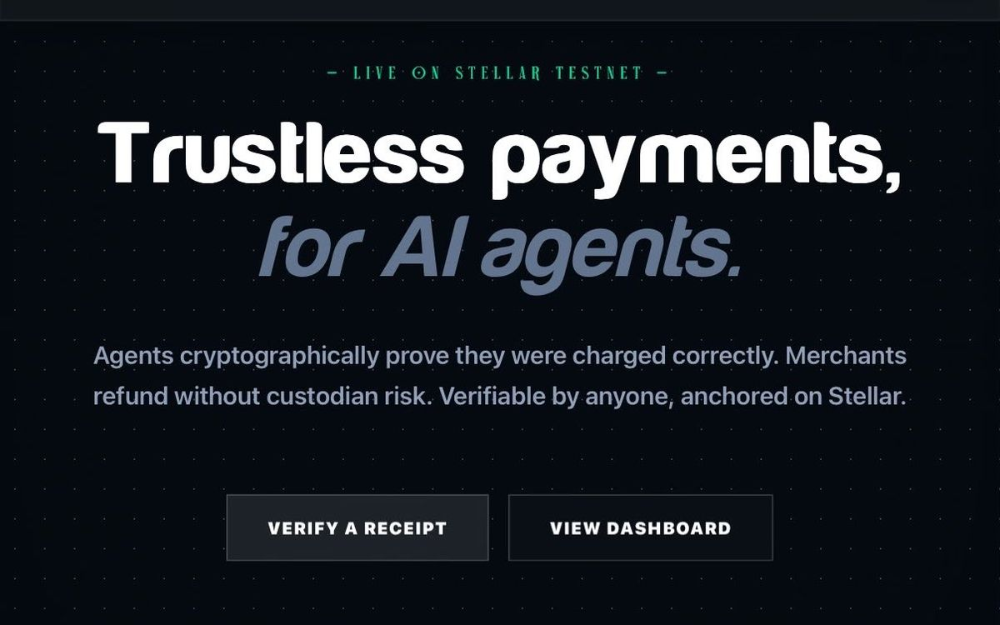
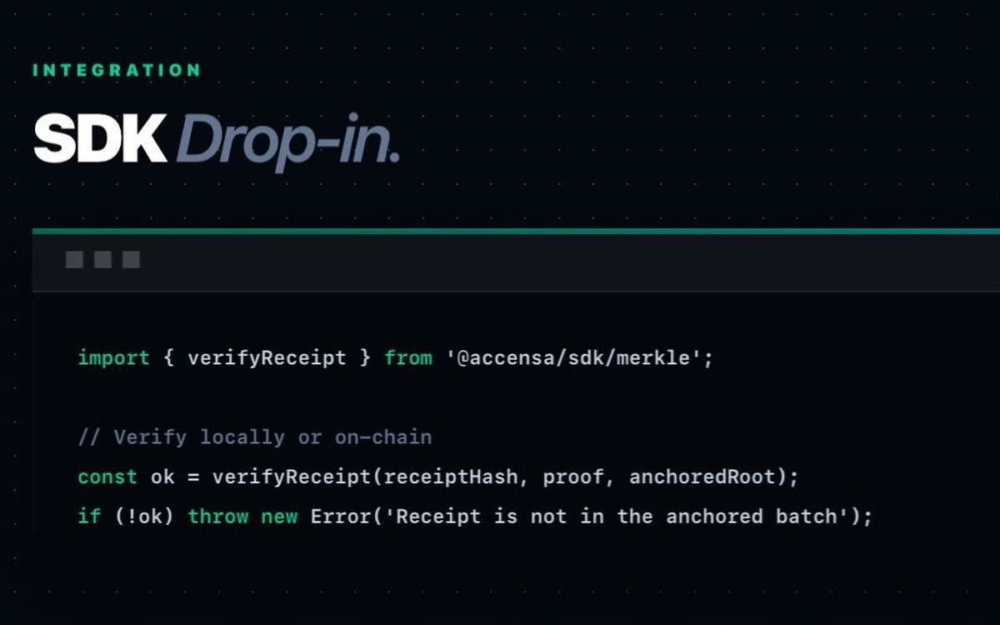
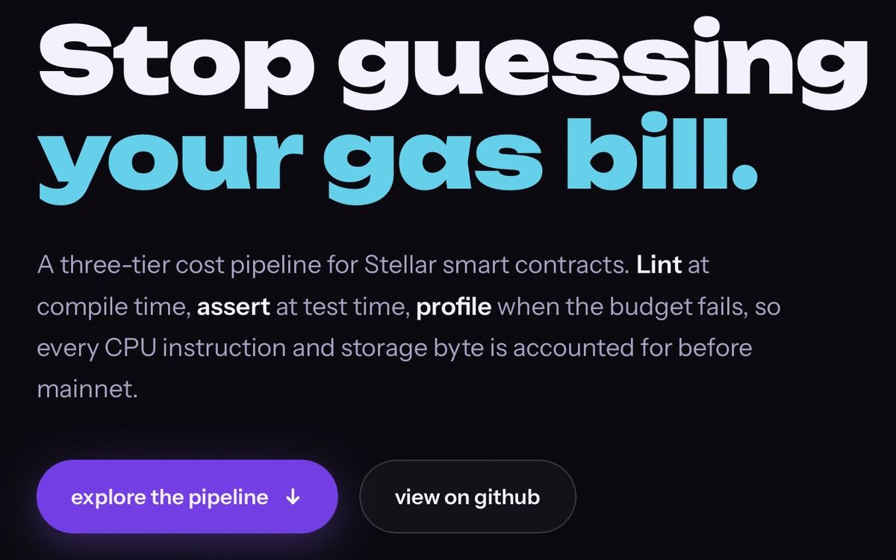
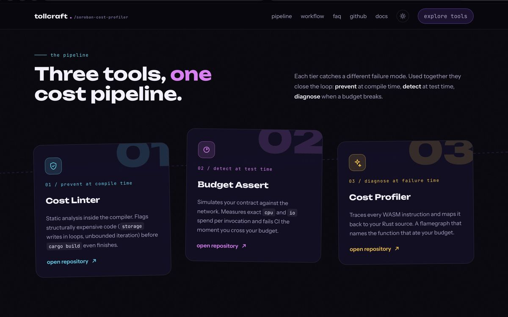

GitHub Certified: Agentic AI Developer
Earned Oct 2026. Valid to Oct 2027.
Verify at Microsoft Learn ↗[ FULL-STACK ]GO / RUST / TYPESCRIPT / SOROBANNEXT.JS AND AI-NATIVE DELIVERYOPEN TO REMOTE AND RELOCATION
I build backend services and on-chain tooling, and I build the front ends that put them in front of people: a Next.js merchant dashboard, a TypeScript verification dashboard, a VitePress site for Rust tooling. 2,856 commits authored and 293 pull requests landed across 62 repositories. 107 of those merges went into 49 repositories that are not mine.
107 merged pull requests into repositories that are not mine
See the record →Earned Oct 2026. Valid to Oct 2027.
Verify at Microsoft Learn ↗Earned Oct 2026. No expiry listed.
Verify at Microsoft Learn ↗Most of this is Stellar work: payment rails, contract tooling and the verification surfaces that go with them. The interfaces on top of that are mine too, and they are the parts shown in the screenshots below: a Next.js dashboard with its public receipt verifier, a spend verification dashboard in TypeScript, and a VitePress site for the Rust tooling. Accensa, StaffPurse and Tollcraft are organizations I own or co-own, so the pull request counts under each one are shipped work rather than community contributions. Airlock is the tool I wrote out of the supply-chain incidents in that ecosystem.
[ 01 ] Core developer and maintainer Stellar Wave program
The merchant back-office for x402 sellers on Stellar. I work across all three public repositories: the Next.js dashboard with its event indexer and SDK, the Soroban contracts that anchor payment receipts and hold the refund vault, and the facilitator that settles x402 payment requests. Receipt verification is public, so a buyer never has to trust the merchant's own database.
The part a merchant actually touches is accensa-app: a Next.js and TypeScript dashboard, with the public receipt verifier at its /verify route reading anchored state off the chain rather than out of a database.


accensa/accensa-app accensa/x402-facilitator-stellar accensa/accensa-contracts
[ 02 ] Core developer
Spend records anchored on Soroban, with a public verification dashboard so an employer can check a disbursement without trusting the payroll system that produced it. Merged work lands in three repositories: staffpurse-web, the public dashboard, plus staffpurse-app and staffpurse-contracts.
StaffPurse/staffpurse-web StaffPurse/staffpurse-app StaffPurse/staffpurse-contracts
[ 03 ] Creator and maintainer Stellar Wave program
Rust tooling for Soroban developers who find out about compute cost too late. soroban-cost-linter flags resource-expensive contract patterns at write time, soroban-budget-assert adds runtime budget assertions, and soroban-cost-profiler explains a failed budget by showing where the instructions actually went.
Tollcraft/docs is the front end for the same three crates: a VitePress site in Vue with a custom theme, so the pipeline reads as one product rather than three command line tools.


Tollcraft/soroban-cost-linter Tollcraft/soroban-cost-profiler Tollcraft/soroban-budget-assert
[ 04 ] Author 2026
A supply-chain scanner for Stellar and Soroban repositories. Python 3.11, standard library only, shipped as a CLI and a composite GitHub Action. Its rules judge a change against the policy that existed before the change, and it fails closed on every file it did not read.
The forks on this account are working copies, not a collection. Each one is where a pull request got written, and what counts as a contribution here is merged work only: pull requests that closed into a default branch I do not control. 107 of them, in 49 repositories belonging to 41 different owners.
Also on the account: the 58 forks those pull requests were written in, the 19 repositories that were created rather than forked, and the 135 merged pull requests that went into the three organizations I own or co-own, which are covered as product work above rather than as community contributions.
A Power Platform helpdesk orchestrator wired to AI models through Google AI Studio, with Dataverse schemas and technical logic built with GitHub Copilot.
A full-stack higher-or-lower game: Go backend, a leaderboard that moved from JSON files to Supabase and SQL, and a Google Stitch frontend deployed on Render.
An interactive email waitlist and Wall of Faith submission system for the Merch By Nini Galilee collection, taken from zero to one.
A private eligibility attestation app on Midnight: a user proves they satisfy a numeric or categorical requirement without revealing the underlying value.
AI Native Software EngineerLearn2Earn
Full-timeBackend services in Go, with AI-assisted tooling carrying the boilerplate. File system and configuration work on Linux hosts, and pairing through technical sprints to debug Go applications and shorten the review loop.
Data and Insights InternChevron
InternshipRecurring reporting in Excel, Power BI, Power Apps and Power Automate, and dataset reviews that found discrepancies upstream of the decisions made from them. This is where the habit of checking a number before publishing it came from.
B.Eng Computer EngineeringUniversity of Benin
Graduated 2025Science and Technology Scholarship AwardMTN Foundation
Aspire Leaders Program, Cohort 4Harvard University
SelectedEffective LeadershipHP Foundation
Email is the fastest way to reach me. If it helps to look at the work first, the open-source record above is the most honest version of a resume I have.